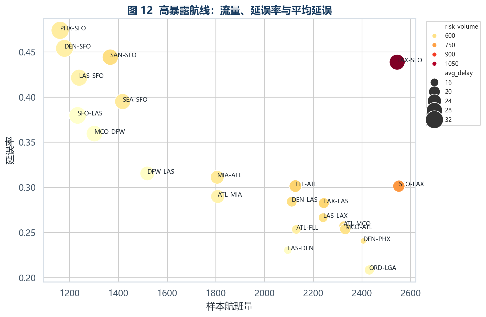
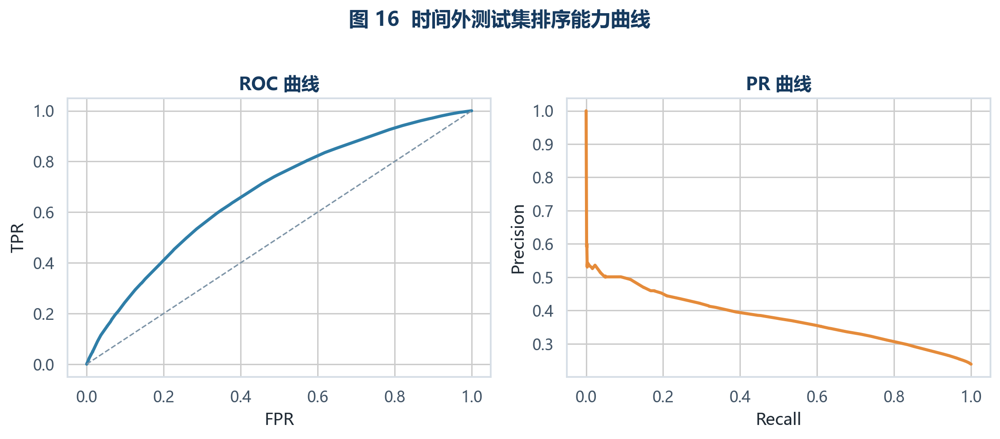
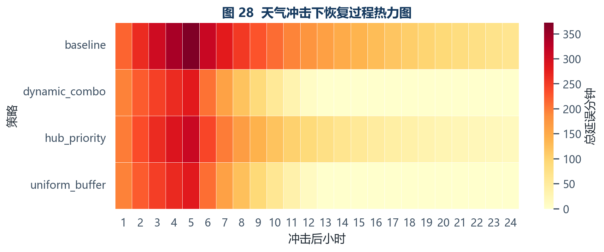
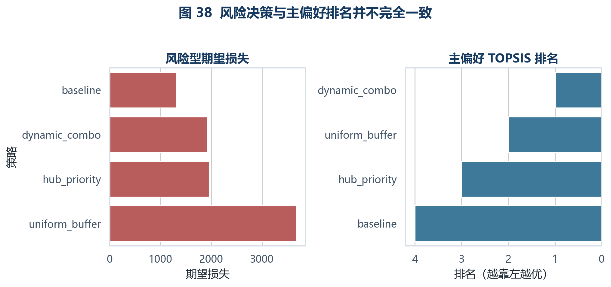

01公开运行数据
02计划风险排序
03机场网络画像
04扰动传播仿真
05偏好与风险决策
06静态现场展示
Evidence board
先看证据，再讨论策略。
页面保留完整交互链路，同时把报告中的关键图表放进同一个视野：航线风险、 预测曲线、恢复热力和策略稳健性分别回答“哪里危险、模型能否排序、冲击怎么扩散、结论是否敏感”。




Operational data
延误不是平均发生的，时间、机场和网络位置会一起改变风险。
样本扩展到 30 个主要机场后，既能保留枢纽结构，也能看到高风险机场与高流量机场并不完全重合。
整体延误率
--
ArrDel15 = 1
平均到达延误
--
完成航班均值
取消代理率
--
样本内取消占比
最佳测试 AUC
--
时间外测试集
星期-小时延误热力
颜色越深，延误率越高机场关键性排序
点击条形后联动网络、画像和预测模块Delay risk
预测模型回答局部风险，传播仿真把局部风险接到系统后果。
训练只使用计划阶段能获得的变量和训练期历史统计，时间顺序切分用于检查模型在 3 月样本上的泛化表现。
快速风险估算
改动参数后即时刷新
估算到达延误概率
--
等待输入
模型表现与主要特征
ROC-AUC / PR-AUC / SHAPNetwork structure
高流量机场不一定是最高风险节点，传播位置会改变恢复优先级。
节点大小表示综合关键性，连线宽度表示航线流量。当前样本下 MIA、DEN、DFW、FLL、MCO 位于关键性前列。
机场有向网络
30 airports / 824 directed routes关键机场画像
--Scenario simulation
同一个冲击下，策略差异会在传播范围、恢复速度和资源成本上分开。
状态方程使用估计传播矩阵 A，冲击机场和恢复策略可切换。默认从当前关键性最高的机场开始观察扰动。
恢复曲线
total delay / performance / cost策略指标对比
--Evaluation
推荐策略不是口号，它随预算、偏好和风险态度改变。
主情景采用 AHP 与熵权组合，恢复收益权重较高时 dynamic_combo 排名第一； 在期望损失或保守成本准则下，baseline 的低成本优势会变得更明显。
偏好权重敏感性
λ 越高，越接近主观恢复偏好综合评价与风险决策
TOPSIS / fuzzy / risk criteria| 策略 | 期望损失 | 风险排名 |
|---|
Live entry
答辩现场扫二维码，直接进入这套静态页面。
地址固定为 GitHub Pages 发布页。手机可扫二维码跟随演示，投屏端保留同一条数据和决策路径。
https://2711944586.github.io/xtgc/Method notes
研究对象是一个系统，不是一串孤立算法。
系统边界从“单航班是否延误”扩展到“机场网络如何恢复”。公式、假设和可复现路径在报告中展开，网页保留最关键的现场检查点。
风险预测
模型输出计划阶段到达延误概率，实际运行和延误原因字段不进入训练。
p_i = P(y_i=1 | x_i), y_i = 1(ArrDel15)
网络传播
机场小时状态由传播矩阵、恢复控制和外部冲击共同驱动。
x(t+1) = A x(t) + B u(t) + G w(t)
多准则评价
成本型指标正向化后组合 AHP 与熵权，再计算 TOPSIS 接近度。
C_i = D_i^- / (D_i^+ + D_i^-)
结论边界
推荐策略随情景和偏好改变，最终结论必须写成条件判断。
s* = argmax score(s | scenario, weights)